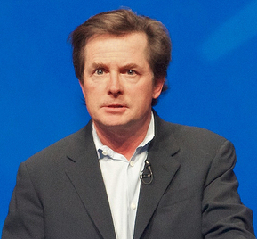
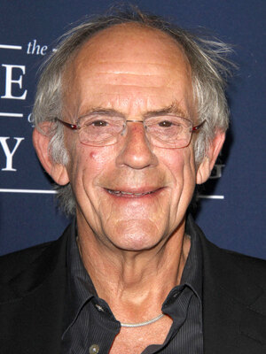
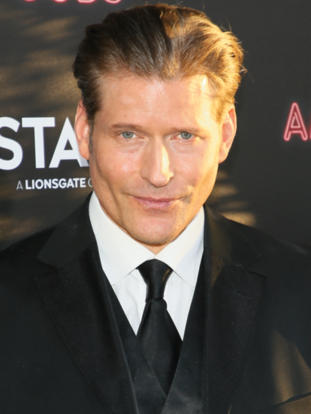
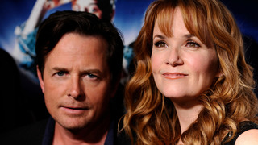

Michael J. Fox (Edmonton, Alberta, Canadá; 9 de junio de 1961),
más conocido como Michael J. Fox, es un actor canadiense-estadounidense, ocasionalmente es cantante y músico. Su carrera en el cine y la televisión
comenzó a fines de los años 1970. Entre sus papeles se destacan Marty McFly en la trilogía de Back to the Future (1985-1990); Alex P. Keaton en
Family Ties (1982-1989), por la cual ganó tres premios Emmy y un Globo de Oro; y Mike Flaherty en Spin City (1996–2000), por la cual ganó un Emmy,
dos Globo de Oro y dos SAG. Tras iniciar su carrera como actor con el nombre de Michael Fox, el canadiense añadió la letra J. para no coincidir con
el intérprete del mismo nombre y como homenaje a otro actor, Michael J. Pollard.

Michael J. Fox en el Lotusphere en 2012
Christopher Alan Lloyd (Stamford, Connecticut; 22 de octubre de 1938)
es un actor estadounidense. Es más conocido por sus papeles como el Doc Emmett Brown en la trilogía de Back to the Future (1985, 1989 y 1990),
Fester Addams en The Addams Family (1991) y su secuela, Addams Family Values (1993), y el Juez Doom en ¿Quién engañó a Roger Rabbit? (1988).
También ha trabajado como actor de voz interpretando a personajes animados, principalmente villanos, como Merlock en
Patoaventuras La Película: El Tesoro de la Lámpara Perdida (1990) o Grigori Rasputín en Anastasia (1997).

Christopher Lloyd en un evento
Crispin Hellion Glover (Nueva York; 20 de abril de 1964) es un actor
de cine, pintor, cineasta, escritor, músico, coleccionista de objetos y archivista de esotérica estadounidense. Glover es conocido por interpretar
a George McFly en Back to the Future (1985), a Creepy Thin Man en la adaptación de Los ángeles de Charlie (2000), Willard Stiles en Willard (2003)
y a Ilosovic Stayne, la Sota de Corazones, en la película de 2010 Alicia en el país de las maravillas. A finales de los años 1980, Glover creó su
propia empresa editorial, convertida en los años 1990 también en productora cinematográfica, Volcanic Eruptions.

Crispin Glover en un photocall
Lea Kathleen Thompson (Rochester, Minnesota, 31 de mayo de 1961)
es una actriz estadounidense. Es conocida principalmente por su papel como Lorraine McFly en la trilogía Back to the Future. Thompson estudió danza
siendo niña, y practicaba tres o cuatro horas diarias. Empezó a bailar profesionalmente a la edad de 14 años. Lea entonces ganó becas para varias
escuelas del ballet clásico, como The American Ballet Theatre y The San Francisco Ballet. Bailó con The Minnesota Dance Theatre, The Pennsylvania
Ballet Company y The Ballet Repertory. Las lesiones y alguna crítica le hicieron abandonar la danza y hacer carrera como actriz. Se trasladó a
Nueva York a los 20 años, y allí realizó varios anuncios de Burger King en los años 1980 junto con Elisabeth Shue, que luego también aparecería
en Back to the Future Part II.

Lea Thompson posando junto a Michael J. Fox
Thomas Franklin Wilson Jr. (Filadelfia; 15 de abril de 1959) es un
actor, comediante, escritor, músico, pintor y actor de doblaje estadounidense. Es más conocido por su papel del antagonista Biff Tannen en la
trilogía de Back to the Future (1985-1990). Thomas Wilson nació en Filadelfia (Pensilvania) y asistió a la Radnor High School, donde estudió artes
dramáticas. Cursó estudios de Política internacional en la Universidad Estatal de Arizona, y también fue a clases de música y tocó la tuba en la
banda de música de la Radnor High School. La primera experiencia "real" de Wilson fue como comediante mientras estudiaba en la
American Academy of Dramatic Arts. Su primer papel importante fue el de un matón llamado Biff Tannen en la película Back to the Future (1985).
El talento de Wilson como comediante y actor se combinó para interpretar al personaje de Biff. Cuando Back to the Future se convirtió en una trilogía,
naturalmente, le pidieron que interpretase en las otras dos películas a Griff, el nieto de Biff, y al bisabuelo de Biff, Buford "Mad Dog" Tannen.